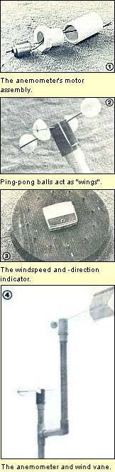
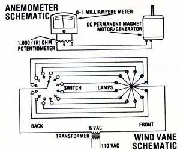

With a few hours of tinkering-and some readily available parts-you can build your own...
Selecting the right spot for a windplant-or even just choosing a suitably sized generator -can be nearly impossible unless you know how much wind to expect and from what direction it's likely to come. After all, the amount of wattage that such a powerplant will produce is actually related to the square of the wind velocity ... and thus a small difference in speed can make a big change in the amount of electricity generated. (For example, a 15-MPH breeze will actually yield about twice the energy that a 10-MPH puff does.)
Of course, there are a number of commercial wind-monitoring systems available-and many of them are excellent products-but they tend to be quite expensive. In fact, I was pretty reluctant to spend the $100 or more (in some cases. much more) necessary to buy a quality cup anemometer, so I decided to build a wind gauge and vane myself .
The two parts of the system have many similarities in their construction, and can both be mounted on the same PVC pipe stand (as shown in the accompanying photo). The anemometer, however, is just a bit more complicated than the wind vane, so let's start with it.
The heart of my homemade anemometer is a small electric motor-with permanent magnets and windings-that can also operate as a generator. It's often possible to remove excellent examples of anemometer-sized motor/ generators a from children's toys-after getting the permission of the youngster in question, of course-but the Radio Shack unit I've specified happens to fit perfectly the PVC pipe parts we'll be using.
To turn the little motor into a generator that'll give a readout proportional to windspeed, all you need to do is give the powerplant "wings" to catch the breeze. A DC ammeter will then measure the motor's output, and you can calibrate the gauge to read in MPH.
The powerplant specified in the materials list will fit snugly within a 3/4" to 1/2" Schedule 40 PVC cup reducer... but you'll have to cut notches in the fitting's seat to accommodate the wire tabs which emerge from the motor/generator's bottom. A 3/4" Schedule 40 PVC coupling can then be slipped over the motor and cup reducer, enclosing the rest of the generator. Now grind the tips of the eight-sided plastic fitting down until they're flush with the 3/4" coupler, cement the unit into the PVC housing with all-purpose glue, and seal the assembly with silicone adhesive ... being careful that you don't get any of the caulking on the axle.
To keep water from leaking in around the motor/generator's shaft, cut a 1/4"-diameter washer from a piece of felt, and poke a hole in the center of the material with a needle. Slip the washer over the generator's shaft, and then oil it with sewing machine lubricant. (Be sure you don't get any oil on the shaft tip! )
Two bisected ping-pong balls serve as the "sails" that spin the homemade wind gauge. After much experimentation, I've found that the spheres are most easily divided by cutting around the seam with a razor knife. Don't puncture the surface, just make a progressively deeper cut until you can split the ball by squeezing it gently.
The hemispherical sails are connected to the central spinner by 3-1/2"-long sections of coat hanger. To mount the rod into each cup, snip two notches in the lip of the plastic-directly opposite each other-and glue the coat hanger in place using general-purpose cement.
While the adhesive is setting, locate a 1-1/2"-diameter, 2-1/2"-long prescription bottle, and drill four 7/64" holes-spaced at 90° intervals-into the sides of the vial, at points just above the bottom. Then bore a 5/64" hole exactly in the center of the bottle's base, using the bottom's casting "tit" as a guide for positioning the drill bit.
Next, turn the vial upright and insert a "sail arm" into each of the 7/64" holes. Position the ping-pong ball halves so that they'll catch the wind (either clockwise or counterclockwise motion will do), and set them so that each one is an equal distance from the bottle but doesn't obstruct the central 5/64" hole.
Epoxy will hold the coat hangers in place within the container but, before you pour the adhesive into the vial, you should place your 5/64" drill bit (coated lightly with oil so the epoxy won't stick to it ) into the 5/64" hole ... to keep a central opening for the motor/generator's shaft. I just drilled a corresponding hole in the bottle's top-to keep the bit lined up-mixed up a small amount of fast-setting epoxy, poured it in 1/4" deep, and then slipped the lid into position to support the "far end" of the drill. After five minutes of setting time, I was able to gently remove the drill and put the as sembly aside to finish drying completely. On the morning after pouring the epoxy, you can attach the spinner to the motor. Just slip the prescription bottle unit over the generator's shaft-the fit should be snug-and test the device for balance and squareness by spinning it. Slide it all the way down on the motor's shaft, apply a drop of cyanoacrylate glue (Crazy Glue, Permabond, or Eastman 910, for example) to the tip of the shaft, and then slip the vial back out until it's flush with the end of the shaft.
Solder a 1,000 (1K) ohm calibration potentiometer across the 0-1 milliampere meter's terminals... using only the central wiper terminal (the lone one, opposite the other two) and either of the remaining connectors. Now wrap each wire from the "sender" around a terminal on the meter (don't solder yet!). When that's done, turn the potentiometer, using a small screwdriver, all the way in one direction... and give the sender a spin. If the needle fails to move, turn the control all the way in the other direction and repeat the test. (If the meter goes in the wrong direction, switch the wires on the meter terminals.) A healthy spin should now produce about a half-scale reading. If it does so, you can complete the construction by soldering the wires to the terminals on the meter.
A well-made commercial anemometer will provide you with an extremely accurate basis for calibrating your device, but you can get pretty close using your car's speedometer. Temporarily mount the sender atop a five-foot piece of plastic pipe-no glue is necessary at this point-and have a friend pilot the family carriage while you hold the spinner up in the wind. Have your driver proceed down a level (and deserted) section of read at 25 MPH, so that you can adjust the control to produce a meter reading of "1". Make a couple of passes back and forth to compensate for the wind direction, as well as your car's streamlining and speed inaccuracy. Then have your assistant drive the car at 20, 15, 10, and 5 MPH so you can note those readings. (If you prefer, you can later make a new faceplate for the meter which reads in the correct MPH.) And, once you've mounted the meter in the center of a suitable board, your anemometer will be complete.
The weather vane portion of my home-made wind-monitoring center consists of a "sail" which is connected to a rotary switch that, in turn, is wired to a series of lamps arranged in a circle. As the wind direction changes, the shaft will rotate and touch different contacts, thereby lighting corresponding lamps ... until it settles on the new wind direction.
The mechanical components of the instrument are quite similar to those used in the building of the anemometer: a coat hanger, a plastic vial, and PVC pipe parts. The wind-catching portions of the instrument, however, are formed from steel rather than ping-pong balls. The best free source of suitable metal to a discarded steel beverage can. (Most drink cans are now made of aluminum and won't work. However, all canned teas come in steel containers ... as do some colas.)
Using an opener, remove the top and bottom of the can and then cut along its seam with a pair of tinsnips. Before you attempt to flatten the metal, snip away the "lips" where the lids were joined to the can's body. The operation may involve removing as much as half an inch from each end of the container, because of the tapers rolled into the can's sides.
At this point you'll notice that the steel still doesn't want to stay flat. Don't despair ... the problem will be remedied in short order. First, use the tinsnips to cut the metal to the shape shown in the photograph. Then, in order to strengthen the flimsy sheet, form three lengthwise ridges in the piece by laying the vane on a length of coat hanger and sliding a short section of 2 X 2 along the metal directly above the wire. The pressure will create grooves in the tailpiece.
Now cut a straight section of coat hanger 12 inches in length, and remove its paint with sandpaper. Once that's done, fasten the support rod into the center groove in the vane, using acid core solder and a torch. ( Never solder in an area with inadequate ventilation, and always avoid breathing the fumes formed while heating the metal, solder, and flux!)
In order to avoid having the tail's weight put lateral pressure on the bearing, you'll need to build a counterbalance. I made one by filling the decorative endpiece of a curtain rod with solder and plunging a short piece of coat hanger into the stillmolten lead. (The wire must, of course, be sanded and timed if it's to bond to the lead correctly.) A number of other approaches could also be used to provide the needed counterweighting ... including welding nuts or washers to the coat hanger section.
Whatever approach you use, the tail and counterweight will have to be mounted into the housing-which is formed from another 1-1/2' X 2-1/2" prescription vial-to establish perfect balance. Drill two 7/64" holes (one on each aide of the bottle) to accept the "free" ends of the coat hanger pieces, and balance the rods in the openings, adjusting the length of the counterweight "stem" to level the assembly.
The switch shaft will be set into the pill bottle in much the same fashion that the motor shaft was mounted for the anemometer. Drill a 15/64" hole in the casting tit on the bottle's bottom, place the oil-coated drill bit into position, and pour the epoxy in around it to a depth sufficient to secure the tail and counter-weight rods.
I've found 14- or 16-wire telephone cable to be the easiest material to use for wiring the rotary switch. Solder one wire to each of the 13 terminals on the bottom of the switch, but be sure to jot down the colors, and their respective terminal numbers, as you go.
Now mount the switch in a 3/4' Schedule 40 PVC pipe coupler. Unfortunately, the oval shape of the switchplate to slightly larger than the coupler's inside diameter, so you'll have to cut (with a hacksaw) a 3/8"-wide, 5/8"-deep notch on each side of the coupler to provide clearance. Furthermore, to reduce the friction of rotation, you should remove the index ball located under the switch's metal mounting bracket.
Once you've finished the wiring and mounting and have allowed the epoxy to set overnight, you can begin putting the pieces together by threading the cable into the coupling and slipping the switch into its grooves. When the device is seated, check to see that the shaft is aligned accurately, or wobbling and sticking will result.
To seal the housing, wrap electrical tape around the upper (cutaway) portion of the coupler, and fill the recesses with silicone sealant to protect the contacts from moisture. (Don't force the adhesive into the switch holes or you'll run the risk of hindering the unit's operation.) While you have the caulk in hand, seal the other end of the switch housing, but avoid getting any material on the shaft or bearing.
Then, to complete the vane assembly, slide the vial/tail/counterbalance body over the switch shaft and down until it contacts the parts inside. Then place a drop of cyanoacrylate glue on the end of the shaft, slip the vial back out until it's flush with the shaft end, and allow the adhesive to dry.
Twelve lamps are arranged in a circle-like the hours on a clock-to serve as the wind direction readout. Although you could use a number of different kinds of lamps, I've specified readily available units that come with attached leads to facilitate wiring.
Drill a dozen holes (in a circle around the wind velocity meter) large enough to accommodate the bulbs, slip the lamps into the openings, and connect one lead from each bulb to the power source. Then solder the other wire from each light to one of the switch's contacts. Refer to the color code chart (you did make one, didn't you?), and connect the lamps, sequentially, to the switch contacts. It doesn't matter where you start, but you must maintain the proper order. Finally, attach the wiper lead from the switch to one leg of your power supply.
The wind vane can be mounted by teeing a second vertical piece of pipe from the anemometer mount (as shown in the photo), but be sure to set it a foot or so above the anemometer to avoid having one device interfere with the wind flow to the other.
Before you glue the wind vane atop the 3/4" PVC stand, you must orient the assembly. First turn the vane so it's pointing due north. Then just have someone check the display to see which lamp is lit. Simply rotate the switch housing (without turning the vane itself) until the north lamp lights up, and then glue the coupler to the pipe in that position.
Move your wind vane and anemometer to different locations periodically, and record-on a regular basis-the readings you get at each site. You should note the speed and direction of the wind at least twice a day aver a two-week period.
Start by checking hilltops, and then move on to fields that are unobstructed by trees, hills, or buildings. (If the equipment is set farther than 100 feet from the meter and lamps, use at least 18-gauge wire to prevent line losses.) In general, a good windplant site will have breezes of over 10 MPH three times per week or more. But keep in mind that one 20-MPH blow will produce more power than three 10-MPH zephyrs (remember the "square law" of wind power?).
If you keep careful records, your wind-energy-measuring equipment will help you to make the best possible decisions about where you should put a windplant and how large a generator you actually need. Furthermore, I think you'll find that the attention the device will cause you to pay to the weather will help you to make innumerable other wise choices-concerning such things as where to put the chicken coop or where to locate trees for a windbreak-around your home.
EDITOR'S NOTE: Windpower enthusiasts will also enjoy the article that appears on page 116.
|
 |
 |
|